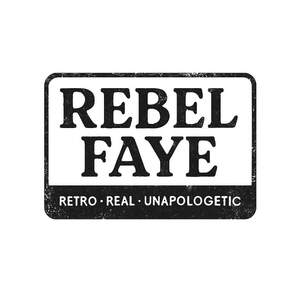

Trade Mark Journal No.2025/039 26 September 2025
UK00004263171 12 September 2025 (9,16,18,21,24,25,26)

- Class 9
- Downloadable printable calendars; Downloadable digital photos; Downloadable image files; Downloadable printable planners and organizers; Downloadable series of children’s books; Downloadable electronic greeting cards for sending by regular mail; Downloadable electronic books; Digital books downloadable from the Internet; Downloadable posters; Downloadable electronic brochures; Downloadable e-books.
- Class 16
- Colouring books; Stationery; Planners [printed matter]; Notepads; Notelets; Greeting cards; Printed greeting cards; Framed photographs; Paintings [pictures], framed or unframed; Prints; Art prints; Paper napkins; Paper table napkins; Table napkins of paper; Napkins made of paper for household use; Paper tablecloths.
- Class 18
- Pet clothing; Clothing for pets; Tote bags; Grocery tote bags; Canvas bags.
- Class 21
- Oven gloves; Mugs; Bowls; Pet feeding bowls; Pet drinking bowls; Pet feeding and drinking bowls; Teapots; Pots.
- Class 24
- Tea towels; Household textile articles; Household textile piece goods; Textile napkins; Cloth napkins; Table napkins of textile; Textile tablecloths; Disposable tablecloths of textile; Tablecloths, not of paper; Cushion covers; Covers for cushions; Cushions (Covers for -); Textile piece goods for making cushion covers.
- Class 25
- Aprons; Bandanas; Ladies' clothing; T-shirts; Sweatshirts; Hooded sweatshirts; Hoodies; Sweaters; Pyjamas; Slippers.
- Class 26
- Patches (Textile -) for ironing-on; Button badges; Ornamental novelty badges; Ornamental novelty badges [buttons]; Badges [buttons] (Ornamental novelty -); Novelty buttons [badges] for wear; Badges for wear, not of precious metal.
DESIGN AND SOURCING KNIT LTD
Representative: GCS Europe Ltd